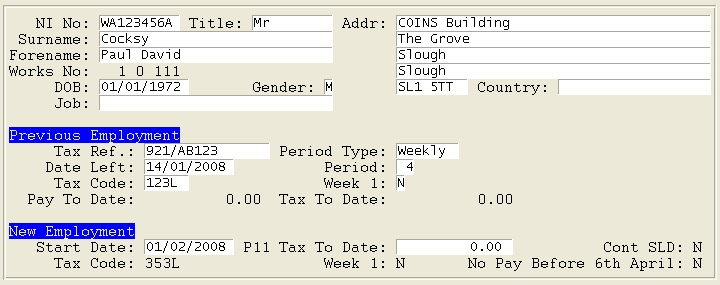

Form Details
Having selected Forms, Forms, or Pension Notification Forms from the pop-up menu, the browse lists the forms within that category. You can use F8 to toggle the sort/search between employee number, name, and NINO. You also have F9/F10 options to Add/Delete forms. Add will be required for pension notifications, and you can use Delete to remove new starts that you want to postpone reporting until the next return.
F7 can be used to change the form type. This can be used to select between P45(3) and P46 for a . It can also be used to set the form type to NONE, which means the form will not be included in the return, and the form will not be added to the next return (for circumstances where there is no requirement to submit a return for that /).
Pressing Return will access the appropriate form. The following screenshot shows a form P45(3) for a (the fields displayed are dependent on the form type):

Any details can be edited on each form as required prior to completion and submission. Amending the employee details on the form will also update the main payroll employee record. Alternatively, details can be updated on the employee maintenance screen (which can be accessed using F11 from the workbench), and this will also update the form.